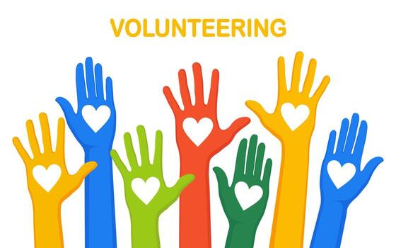

About This Activity
Volunteering allows you to contribute to society, help others, and develop a sense of responsibility and empathy.
Benefits:
- Builds social responsibility
- Improves empathy and compassion
- Strengthens community connection
Step-by-Step Instructions
1
Choose a volunteering activity or cause
2
Prepare necessary materials or permissions
3
Actively participate and help others
4
Reflect on the impact of your contribution
Tips for Success:
Keep your phone away while volunteering. Be fully present and engage meaningfully with the people around you.